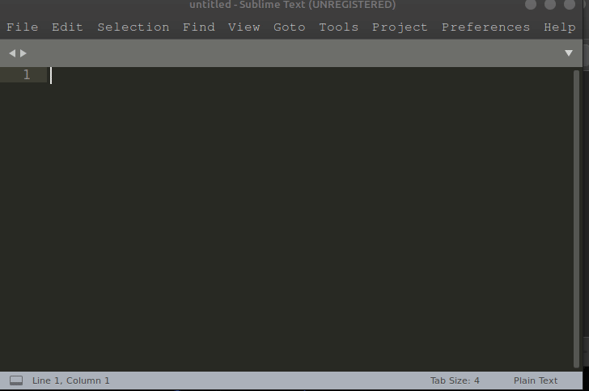

The First Button
Piyush Thange May 11th 2020.Hello, World!!! This is a blog where you can get a basics of COMPUTERS and where to start. It's 2020 and pandamic is assigned on the world due to a bug named COVID-19. Well I'm a geek and here to script my experiences and type them away.
The First Button
The First Button is a computer program which is written in the most magnificient language crafted by Dennis Ritchie called "C". Well I know this is 2020 & we have a more better languages than C but the first button for your programming career OR a newbie to computers you always start your days with "C". If you want to learn any language the first progarm you will scribble will be printing out "Hello, World!" on your Terminal.
A Computer is a machine which perform calculation by fraction of second. Calculation in the sense, it palys with 0's & 1's i.e it understands only language of 0's & 1's . This language of 0's and 1's is called Binary Language.
PROCESSOR!
There is a Processor in your machine which performs this magic in fractions. A Processor has small Transistors in it which switches ON(1's) or OFF(0's) as the signals are sent.
Zoom Into Microchip will give you an idea.
We'll move on further for writing the code in "C".
Open a code editor on your machine such as Sublime and follow the following.

CODE
/*Commenting in C*/
#include<stdio.h>
int main(void)
{
printf("Hello, World!\n");
}
{...} here which will print whatever is typed in between printf("...")
stdio.h library used for printing the output.
a.out will be generated. This file contains the binary form of the program.
./a.out this will print out the output to your terminal.
Hence this was just an overview how the program works in a computer. I hope you enjoy your programming.
Linus Torvalds
Back to HOME.